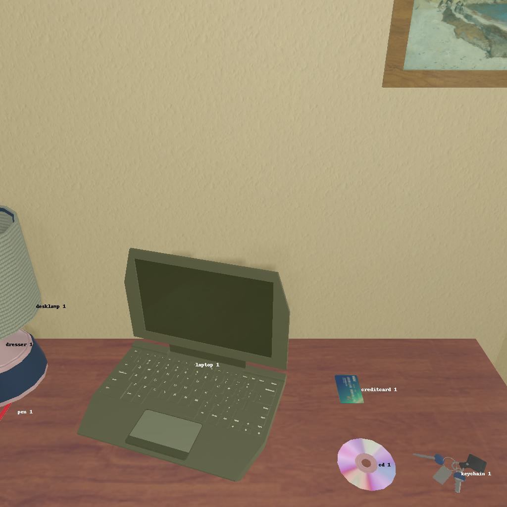

---------------------------------------------------------task: 1---------------------------------------------------------
--------------------------------------------------------------------------------------------------------------------------------------------------------------------
--------------------------------------------------------------------------------------------------------------------------------------------------------------------
Step:--------------------------------------------------------------------------2-------------------------------------------------------------------------------
----------------------------------------
VLM Prompt:
Image1:
**Instruction**
1. Analyze the provided image to identify all visible household objects, focusing on those relevant to the task description "examine the alarmclock with the desklamp."
2. Use the analysis of the image and the task hint "The agent must find an object of the desired type, locate and turn on a light source with the desired object in-hand." to answer the question: what is the most reasonable action in the choices for the task description "examine the alarmclock with the desklamp"?
4. Decide and write the answer using the template: The answer is: (i): , where i is the real number. If there is no desired object in the image, search every place based on **Initial Observation** to find the object. And if no one is exactly correct, choose a similar answer.
**Initial Observation**
You are in the middle of a room. Looking quickly around you, you can see bed (1), dresser (1), drawer (1-10), garbagecan (1), shelf (1-7)
**Answer Choices**
(1): go to bed 1
(2): go to drawer 1
(3): go to drawer 2
(4): go to drawer 3
(5): go to drawer 4
(6): go to drawer 5
(7): go to garbagecan 1
(8): go to drawer 6
(9): go to drawer 7
(10): go to drawer 8
(11): go to drawer 9
(12): go to drawer 10
(13): go to shelf 1
(14): go to shelf 3
(15): go to shelf 4
(16): go to shelf 5
(17): go to shelf 6
(18): go to shelf 7
(19): take laptop 1 from dresser 1
(20): take cd 1 from dresser 1
(21): take keychain 1 from dresser 1
(22): take creditcard 1 from dresser 1
(23): take pen 1 from dresser 1
(24): use desklamp 1
(25): examine dresser 1
**Answer**
Let's think step by step by following the instructions.
----------------------------------------
----------------------------------------
Original Response:
First, we analyze the image to identify all visible household objects. We can see a desklamp, laptop, credit card, CD, and keychain on the dresser. There is no alarm clock visible in the image.
Next, we use the analysis and the task hint. The task requires us to examine the alarm clock with the desklamp. Since the alarm clock is not visible in the image, we need to search the room based on the Initial Observation to find the alarm clock.
The Initial Observation lists several places to search, such as the bed, drawers, garbage can, and shelves. The most reasonable place to look for an alarm clock would likely be on a shelf, dresser, or drawer, as these are common places to keep an alarm clock.
Of the answer choices provided, the drawers and shelves are the most likely places to find an alarm clock. Since there is no specific drawer or shelf mentioned in the task description, we can choose one at random to begin the search.
The answer is: (13): go to shelf 1.
----------------------------------------
----------------------------------------
>>> Refine Original VLM Response and Get Pure Action: go to shelf 1
----------------------------------------
-----------------------------------------------------------------
Running time: 10.463208436965942 seconds
Total Money: 0.32280000000000003
-----------------------------------------------------------------
-----------------------------------------------------------------
Text Observation:You arrive at loc 13. On the shelf 1, you see a alarmclock 1, and a mug 1.
-----------------------------------------------------------------
UNSUCCEED